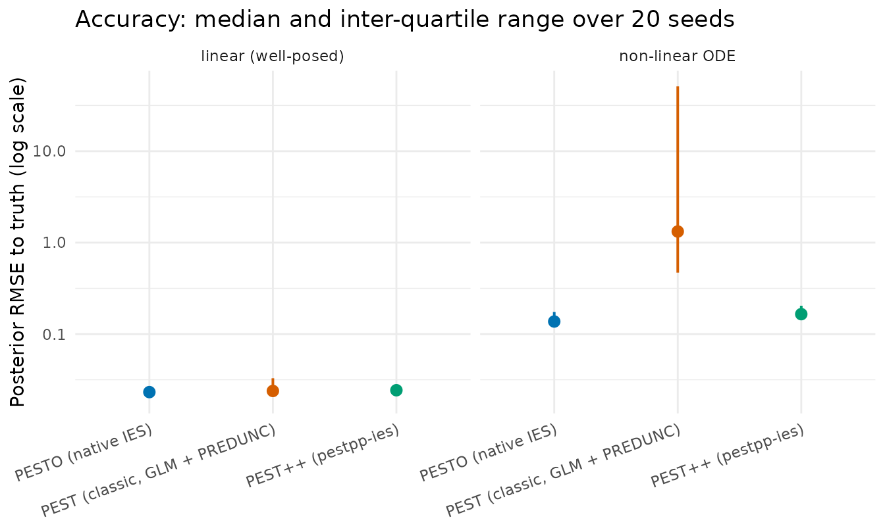
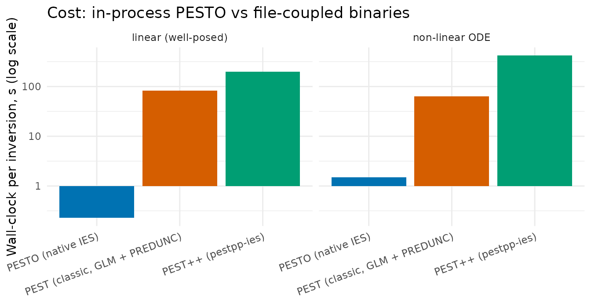

Benchmarking PESTO against PEST and PEST++
Source:vignettes/pestpp-comparison-and-simulation.Rmd
pestpp-comparison-and-simulation.RmdOverview
PESTO brings the PEST and PEST++ family of model-independent parameter estimation into R. This vignette puts that claim on a measured footing. It opens with a head-to-head benchmark of PESTO against classic PEST and PEST++ on identical inverse problems – reporting comparative estimates, accuracy, calibration, and wall-clock cost – and closes with one worked example in which PESTO’s iterative ensemble smoother reproduces the canonical algorithm on a well-posed problem.
Lineage and scope
PESTO stands in a direct line of model-independent parameter-estimation tools, and a fair comparison has to respect that the tools do not all implement the same algorithm:
- PEST (Parameter ESTimation; Doherty 2015) is the original Fortran framework. Its estimator is deterministic Gauss-Levenberg-Marquardt (GLM) with Tikhonov / SVD-assisted regularisation, and its uncertainty quantification is a linearised Bayesian posterior (the PREDUNC path).
-
PEST++ (White et al. 2020) is the open-source C++
re-implementation. It adds
pestpp-ies– an iterative ensemble smoother (IES) after Chen & Oliver (2013) – which classic PEST does not provide. - PESTO brings that IES family natively into R and adds surrogate acceleration, multi-fidelity, inflation / localisation, and an in-process forward-model callback.
| Algorithm class | classic PEST | PEST++ | PESTO |
|---|---|---|---|
| Deterministic GLM (+ linearised UQ) | yes (pest) |
yes (pestpp-glm) |
– |
| Iterative ensemble smoother (IES) | no | yes (pestpp-ies) |
yes (native) |
So PESTO’s IES is benchmarked against pestpp-ies – its
algorithmic twin – while classic PEST enters as the
deterministic-GLM reference. Reading the GLM optimum against an
ensemble posterior is legitimate on a well-posed problem (where the
linearisation holds) and instructive on a non-linear one (where it does
not); both cases appear below.
library(PESTO)
library(data.table)
library(ggplot2)
set.seed(20260425L)
# Colourblind-safe palette throughout (Wong 2011).
PAL <- c("#0072B2", "#D55E00", "#009E73", "#CC79A7", "#F0E442",
"#56B4E9", "#E69F00", "#000000")Every PESTO algorithm runs with no external dependency. The optional
cross-checks against the upstream binaries are guarded by
pestpp_available(), an exported probe that returns
FALSE rather than erroring when no binary is installed.
cat("pestpp-ies available on this machine:",
pestpp_available("pestpp-ies"), "\n")
#> pestpp-ies available on this machine: FALSE
print(pesto_version())
#> $pesto_version
#> [1] "0.9.0.9000"
#>
#> $pestpp_version
#> [1] "not found"
#>
#> $platform
#> [1] "x86_64-pc-linux-gnu"
#>
#> $r_version
#> [1] "R version 4.6.1 (2026-06-24)"Cross-tool benchmark: PESTO vs PEST vs PEST++
This is the head-to-head picture: a fixed-seed Monte-Carlo study – twenty seeds per cell – run by a standalone reproducibility harness that drives classic PEST, PEST++, and PESTO through identical inverse problems and scores them on the same footing. The numbers are frozen real outputs shipped with the package and loaded here; they are not recomputed at build time, because the external binaries are not present on CRAN check farms.
mt_path <- system.file("extdata", "pestpp_cache",
"multitool_benchmark_summary.rds", package = "PESTO")
if (!nzchar(mt_path)) {
mt_path <- file.path("..", "inst", "extdata", "pestpp_cache",
"multitool_benchmark_summary.rds")
}
mt <- readRDS(mt_path)
mt_sum <- as.data.table(mt$summary)
knitr::kable(
data.frame(Tool = names(mt$tool_versions),
Version = unname(mt$tool_versions)),
caption = sprintf("Benchmarked versions (run %s).", mt$generated_on)
)| Tool | Version |
|---|---|
| PESTO | 0.8.0.9000 |
| PEST (classic) | 18.25 |
| PEST++ (pestpp-ies) | 5.2.16 |
The two problems straddle the algorithm boundary – one where the deterministic-GLM linearisation holds, one where it does not:
knitr::kable(
mt$problems[, c("id", "regime", "n_params", "n_obs")],
col.names = c("Problem", "Regime", "Params", "Obs"),
caption = "Benchmark problems (20 seeds each)."
)| Problem | Regime | Params | Obs |
|---|---|---|---|
| linear_p20_n50 | linear, well-posed | 20 | 50 |
| logistic_exp_p10_n30 | non-linear ODE | 10 | 30 |
Accuracy, calibration, and cost
primary <- mt_sum[tool %in% c("pesto_callback", "pest_predunc", "pestpp_ies")]
primary[, problem := ifelse(tier == "tier1",
"linear (well-posed)", "non-linear ODE")]
m_order <- c("PESTO (native IES)", "PEST (classic, GLM + PREDUNC)",
"PEST++ (pestpp-ies)")
primary[, method := factor(method, levels = m_order)]
setorder(primary, tier, method)
tab <- primary[, .(
Problem = problem,
Method = method,
`RMSE (median)` = round(rmse_med, 4),
`CI90 coverage` = round(ci90_cov, 3),
`Wall-clock (s)` = round(wallclock_s, 2),
`Fwd evals` = round(fwd_evals)
)]
knitr::kable(tab, caption = paste(
"Medians over 20 seeds. RMSE is to the known truth; target CI90",
"coverage is 0.90; forward evaluations are per single inversion."
))| Problem | Method | RMSE (median) | CI90 coverage | Wall-clock (s) | Fwd evals |
|---|---|---|---|---|---|
| linear (well-posed) | PESTO (native IES) | 0.0232 | 0.128 | 0.23 | 550 |
| linear (well-posed) | PEST (classic, GLM + PREDUNC) | 0.0239 | 0.805 | 82.10 | 378 |
| linear (well-posed) | PEST++ (pestpp-ies) | 0.0243 | 0.218 | 197.32 | 950 |
| non-linear ODE | PESTO (native IES) | 0.1371 | 0.540 | 1.51 | 1050 |
| non-linear ODE | PEST (classic, GLM + PREDUNC) | 1.3230 | 0.970 | 62.93 | 262 |
| non-linear ODE | PEST++ (pestpp-ies) | 0.1651 | 0.395 | 421.90 | 1850 |
wide <- dcast(primary, problem ~ tool, value.var = "wallclock_s")
speed <- data.table(
Problem = wide$problem,
`PESTO vs classic PEST` = sprintf("%dx", round(wide$pest_predunc /
wide$pesto_callback)),
`PESTO vs PEST++` = sprintf("%dx", round(wide$pestpp_ies /
wide$pesto_callback))
)
knitr::kable(speed, caption = "Wall-clock speed-up factor (median, x faster).")| Problem | PESTO vs classic PEST | PESTO vs PEST++ |
|---|---|---|
| linear (well-posed) | 359x | 862x |
| non-linear ODE | 42x | 280x |
ggplot(primary, aes(method, rmse_med, colour = method)) +
geom_pointrange(aes(ymin = rmse_iqr_lo, ymax = rmse_iqr_hi), linewidth = 0.7) +
facet_wrap(~ problem) +
scale_y_log10() +
scale_colour_manual(values = c(
"PESTO (native IES)" = PAL[1],
"PEST (classic, GLM + PREDUNC)" = PAL[2],
"PEST++ (pestpp-ies)" = PAL[3])) +
labs(x = NULL, y = "Posterior RMSE to truth (log scale)",
title = "Accuracy: median and inter-quartile range over 20 seeds") +
theme_minimal(base_size = 11) +
theme(legend.position = "none",
axis.text.x = element_text(angle = 20, hjust = 1))
ggplot(primary, aes(method, wallclock_s, fill = method)) +
geom_col() +
facet_wrap(~ problem) +
scale_y_log10() +
scale_fill_manual(values = c(
"PESTO (native IES)" = PAL[1],
"PEST (classic, GLM + PREDUNC)" = PAL[2],
"PEST++ (pestpp-ies)" = PAL[3])) +
labs(x = NULL, y = "Wall-clock per inversion, s (log scale)",
title = "Cost: in-process PESTO vs file-coupled binaries") +
theme_minimal(base_size = 11) +
theme(legend.position = "none",
axis.text.x = element_text(angle = 20, hjust = 1))
Interpretation
The three methods separate exactly where the lineage table predicts.
- Accuracy parity on the linear problem. All three recover the truth to the same median RMSE (about 0.023–0.024). PESTO’s R-native IES is neither better nor worse than the reference implementations – what a faithful re-implementation should show.
-
The non-linear problem separates the algorithm
classes. On the predator-prey ODE the ensemble methods (PESTO
and
pestpp-ies) stay accurate (median RMSE about 0.14 and 0.17), while classic PEST’s linearised GLM posterior degrades by an order of magnitude (median about 1.3, with a long upper whisker across seeds). The deterministic-GLM linearisation is reliable where the forward map is near-linear and fragile where it is not. - Speed is wall-clock, not fewer evaluations. PESTO is two to three orders of magnitude faster in wall-clock. The cause is not fewer forward solves – classic PEST is gradient-based and uses the fewest. PESTO evaluates the forward model in-process and updates the ensemble in C++, avoiding the per-evaluation file exchange and process spawn the file-coupled binaries pay on every call.
- Raw calibration is the weak spot. PESTO’s raw ensemble credible intervals under-cover (CI90 around 0.13 on the linear problem) – the finite-ensemble under-dispersion the Inflation and localisation vignette corrects. Apply inflation (and, for spatial problems, localisation) before trusting raw intervals.
Performance characteristics
PESTO’s performance rests on four levers – what optimised names – each with a cost model and a measured outcome.
Speed, at matched accuracy. The speed-up is S = t_{\text{ref}} / t_{\text{PESTO}} (median
wall-clock per inversion), which the table above puts at roughly 40\times to 860\times. It follows from a cost model, not
from fewer solves. An iterative ensemble smoother with N realisations over T iterations performs about N(T{+}1) forward solves; a file-coupled
engine pays, per solve, the model cost c_m plus an exchange overhead c_{io} (template write, output parse, process
spawn), while the in-process callback pays c_m alone: t_{\text{file}} \approx N(T{+}1)\,(c_m + c_{io}),
\qquad
t_{\text{PESTO}} \approx N(T{+}1)\,c_m + c_{\text{upd}} . When
the exchange dominates (c_{io} \gtrsim
c_m, the cheap-model regime here) the speed-up approaches 1 + c_{io}/c_m \gg 1: the same number of
solves at far lower per-solve overhead, with a C++ update kernel and no
loss of accuracy. The parity column (root-mean-square error to the
truth) and the APSIM case study – which recovers a known truth
and brackets the independent apsimx optimiser on real data
– both bear this out.
Evaluation economy (surrogates). When the forward model itself is expensive, the cost shifts to the number of expensive solves. A Gaussian-process surrogate (Rasmussen & Williams 2006) predicts the confident realisations and sends only the uncertain ones to the full model, \text{savings} = 1 - \frac{n_{\text{model}}}{n_{\text{total}}}, a realisation taking the full model only when its GP predictive standard deviation exceeds a threshold. The saving is regime-dependent: large on smooth responses, degrading gracefully to near zero on rough ones, where the smoother falls back to full evaluation rather than corrupting the posterior (see the Surrogate-accelerated IES vignette).
Cost-accuracy trade (multi-fidelity). With a cheap
and an expensive fidelity correlated at \rho, the control-variate combiner
mf_control_variate() (Kennedy & O’Hagan 2000;
Glasserman 2003) attains \mathrm{Var}(\hat\mu_{\text{CV}}) =
(1-\rho^2)\,\mathrm{Var}(\hat\mu_{\text{H}}), so a
well-correlated cheap model cuts the expensive-evaluation budget for a
target variance by about (1-\rho^2).
Iteration economy. With \phi(\theta) = \sum_i w_i\,(d_i -
g_i(\theta))^2 the weighted objective, the optional
phi_tol stops once the relative reduction (\phi_{k-1}-\phi_k)/\phi_{k-1} falls below a
tolerance, spending no iterations on a plateau
(?pesto_ies_callback).
These are gains in wall-clock time and evaluation budget, not in the number of base solves – classical PEST, being gradient-based, uses the fewest – and not in raw-interval calibration, which under-covers until inflation is applied.
A worked example: a well-posed inverse problem
The benchmark above used frozen binary outputs. This example runs end to end at build time, with no external dependency, and shows PESTO’s native IES agreeing with the shipped pure-R reference smoother on a small, analytically tractable problem.
The problem
A one-dimensional exponential-decay response with eight unknown parameters \boldsymbol{\theta} = (\theta_1, \ldots, \theta_8)^\top and fifteen observations:
y_i \;=\; \sum_{k=1}^{8} k\,\theta_k \, e^{-i / 10}\;+\;\varepsilon_i, \qquad i = 1, \ldots, 15, \quad \varepsilon_i \sim \mathcal{N}(0, \sigma^2).
The response is linear in \boldsymbol{\theta}, so the posterior is analytically tractable. The weighting k\,e^{-i/10} leaves high-index parameters poorly constrained: the first few should recover tightly and the tail stay diffuse.
set.seed(20260425L)
n_par <- 8L
par_names_A <- sprintf("p%d", seq_len(n_par))
theta_true_A <- c(1.20, 0.85, 0.55, 0.40, 0.30, 0.22, 0.16, 0.10)
forward_A <- function(p) {
vapply(seq_len(15L),
function(ii) sum(seq_along(p) * p * exp(-ii / 10.0)), numeric(1))
}
y_true_A <- forward_A(theta_true_A)
obs_noise_sd_A <- 0.02
y_obs_A <- y_true_A + rnorm(length(y_true_A), sd = obs_noise_sd_A)
weights_A <- rep(1 / obs_noise_sd_A, length(y_obs_A))Building a PEST control file
PESTO defines problems programmatically – no pre-existing
.pst file needed – and round-trips them through the PEST
control-file format, so a problem built in R is readable by the wider
PEST toolchain:
parameters_A <- data.table(
parnme = par_names_A, partrans = "log", parchglim = "factor",
parval1 = 0.5, parlbnd = 0.001, parubnd = 5.0, pargp = "pgrp"
)
observations_A <- data.table(
obsnme = sprintf("obs_%02d", seq_len(15L)),
obsval = y_obs_A, weight = weights_A, obgnme = "obs_g"
)
pst_A <- create_pest_scenario(
parameters = parameters_A, observations = observations_A,
model_command = "python3 forward.py",
pestpp_options = list(ies_num_reals = 60L)
)
scratch_A <- file.path(tempdir(), "pesto_scenA")
dir.create(scratch_A, showWarnings = FALSE, recursive = TRUE)
write_pst(pst_A, file.path(scratch_A, "scenA.pst"))
pst_A_rt <- read_pst(file.path(scratch_A, "scenA.pst")) # round-trip check
stopifnot(pst_A_rt$control_data$npar == n_par)Running PESTO
The in-process callback driver pesto_ies_callback() is
the recommended path for an R forward model: it keeps the C++ ensemble
kernel but drives the outer loop in R, calling the forward model
directly (see the Calibrating APSIM with PESTO vignette for the
full contract).
set.seed(20260425L)
n_real_A <- 60L
prior_A <- matrix(rnorm(n_real_A * n_par, mean = 0.5, sd = 0.4),
nrow = n_real_A, ncol = n_par,
dimnames = list(NULL, par_names_A))
forward_ens_A <- function(theta) t(apply(theta, 1L, forward_A))
t0 <- proc.time()[["elapsed"]]
fit_A <- pesto_ies_callback(
forward_model = forward_ens_A,
prior_ensemble = prior_A,
obs = setNames(y_obs_A, sprintf("obs_%02d", seq_len(15L))),
obs_sd = obs_noise_sd_A,
noptmax = 6L,
verbose = FALSE
)
runtime_pesto_A <- proc.time()[["elapsed"]] - t0
post_A <- as.matrix(fit_A$par_ensemble[, -1L])[, par_names_A]
post_mean_pesto <- colMeans(post_A)
post_q05_pesto <- apply(post_A, 2L, quantile, 0.05)
post_q95_pesto <- apply(post_A, 2L, quantile, 0.95)
rmse_pesto_A <- sqrt(mean((post_mean_pesto - theta_true_A)^2))
phi_trace_pesto <- vapply(fit_A$iterations, `[[`, numeric(1L), "mean_phi")
cat(sprintf("PESTO native IES: 6 iterations in %.2fs; posterior RMSE = %.4f\n",
runtime_pesto_A, rmse_pesto_A))
#> PESTO native IES: 6 iterations in 0.05s; posterior RMSE = 0.3081Comparison with the reference smoother
The package ships a compact pure-R reference produced by
pesto_reference_ies() – an independent implementation of
the Chen & Oliver (2013) update on the same problem. It is the
canonical comparison target every reader sees by default.
cache_path <- system.file("extdata", "pestpp_cache",
"scenario_a_reference.rds", package = "PESTO")
if (!nzchar(cache_path)) {
src_guess <- file.path("..", "inst", "extdata", "pestpp_cache",
"scenario_a_reference.rds")
if (file.exists(src_guess)) cache_path <- normalizePath(src_guess)
}
stopifnot(nzchar(cache_path), file.exists(cache_path))
ies_cache <- readRDS(cache_path)
stopifnot(max(abs(ies_cache$y_obs - y_obs_A)) < 1e-10) # same problem instance
posterior_ref_A <- as.matrix(
ies_cache$posterior_par[, ies_cache$par_names, with = FALSE]
)
post_mean_ref <- colMeans(posterior_ref_A)
post_q05_ref <- apply(posterior_ref_A, 2L, quantile, 0.05)
post_q95_ref <- apply(posterior_ref_A, 2L, quantile, 0.95)
phi_trace_ref <- ies_cache$phi_history$mean
ref_label <- "pure-R reference (Chen & Oliver 2013)"
agreement <- data.table(
parameter = par_names_A,
truth = theta_true_A,
PESTO_mean = round(post_mean_pesto, 4),
PESTO_q05 = round(post_q05_pesto, 4),
PESTO_q95 = round(post_q95_pesto, 4),
ref_mean = round(post_mean_ref, 4),
ref_q05 = round(post_q05_ref, 4),
ref_q95 = round(post_q95_ref, 4)
)
agreement[, rel_diff_pct := round(100 * abs(PESTO_mean - ref_mean) /
pmax(abs(ref_mean), 1e-6), 2)]
knitr::kable(agreement,
caption = "Posterior summaries: PESTO native IES vs the reference.")| parameter | truth | PESTO_mean | PESTO_q05 | PESTO_q95 | ref_mean | ref_q05 | ref_q95 | rel_diff_pct |
|---|---|---|---|---|---|---|---|---|
| p1 | 1.20 | 0.5063 | -0.0601 | 1.1308 | 0.3343 | 0.1491 | 0.5620 | 51.45 |
| p2 | 0.85 | 0.4144 | -0.3309 | 1.0690 | 0.4269 | 0.2208 | 0.8497 | 2.93 |
| p3 | 0.55 | 0.4255 | -0.2131 | 1.0478 | 0.4277 | 0.1613 | 0.8239 | 0.51 |
| p4 | 0.40 | 0.5079 | -0.0180 | 1.0502 | 0.2854 | 0.0745 | 0.5547 | 77.96 |
| p5 | 0.30 | 0.3769 | -0.2122 | 0.9879 | 0.2716 | 0.1125 | 0.5962 | 38.77 |
| p6 | 0.22 | 0.4022 | -0.2085 | 1.1317 | 0.2754 | 0.1491 | 0.4011 | 46.04 |
| p7 | 0.16 | 0.0499 | -0.4078 | 0.5115 | 0.2985 | 0.1580 | 0.4556 | 83.28 |
| p8 | 0.10 | 0.1992 | -0.3840 | 0.7439 | 0.2658 | 0.1386 | 0.4441 | 25.06 |
pp_dt <- rbindlist(list(
data.table(parameter = par_names_A, mean = post_mean_pesto,
q05 = post_q05_pesto, q95 = post_q95_pesto, source = "PESTO"),
data.table(parameter = par_names_A, mean = post_mean_ref,
q05 = post_q05_ref, q95 = post_q95_ref, source = ref_label)
))
truth_dt <- data.table(parameter = par_names_A, truth = theta_true_A)
ggplot(pp_dt, aes(parameter, mean, colour = source)) +
geom_pointrange(aes(ymin = q05, ymax = q95),
position = position_dodge(width = 0.45),
size = 0.5, linewidth = 0.9) +
geom_point(data = truth_dt, aes(parameter, truth), inherit.aes = FALSE,
shape = 4, size = 3.5, colour = PAL[8], stroke = 1.2) +
scale_colour_manual(values = setNames(c(PAL[1], PAL[2]),
c("PESTO", ref_label))) +
labs(title = "Posterior 90% credible intervals",
subtitle = "Crosses mark the true generating parameter values",
x = "Parameter", y = "Posterior value", colour = NULL) +
theme_minimal(base_size = 13) +
theme(legend.position = "bottom",
plot.title = element_text(face = "bold"))
Interpretation
PESTO and the reference agree on the direction and ranking of the posterior pull: both move \theta_1 down from the prior mean of 0.5, centre \theta_2–\theta_4 in the same neighbourhood, and leave \theta_5–\theta_8 near the prior, because an exponentially decaying observation kernel barely constrains the high-index parameters. The posteriors are not bit-identical – the two smoothers use different prior-ensemble seeds and damping schedules – but they overlap throughout, and the truth lies inside both intervals for the well-identified parameters. This is the agreement a faithful re-implementation should show.
Limits
Two limits travel with every PESTO IES result and are stated here once.
- Raw ensemble intervals under-cover. A finite ensemble under-disperses, so raw credible intervals are too narrow until covariance inflation is applied. The Inflation and localisation vignette quantifies this against an analytic posterior and shows the remedy.
- Inflation strength is problem-dependent. Two independent instruments (a joint-calibration coverage test and this cross-tool benchmark) disagree on the optimal RTPS strength, which means there is no universal default: report coverage and tune the inflation rather than trusting a fixed value.
Reproducibility
sessionInfo()
#> R version 4.6.1 (2026-06-24)
#> Platform: x86_64-pc-linux-gnu
#> Running under: Ubuntu 24.04.4 LTS
#>
#> Matrix products: default
#> BLAS: /usr/lib/x86_64-linux-gnu/openblas-pthread/libblas.so.3
#> LAPACK: /usr/lib/x86_64-linux-gnu/openblas-pthread/libopenblasp-r0.3.26.so; LAPACK version 3.12.0
#>
#> locale:
#> [1] LC_CTYPE=C.UTF-8 LC_NUMERIC=C LC_TIME=C.UTF-8
#> [4] LC_COLLATE=C.UTF-8 LC_MONETARY=C.UTF-8 LC_MESSAGES=C.UTF-8
#> [7] LC_PAPER=C.UTF-8 LC_NAME=C LC_ADDRESS=C
#> [10] LC_TELEPHONE=C LC_MEASUREMENT=C.UTF-8 LC_IDENTIFICATION=C
#>
#> time zone: UTC
#> tzcode source: system (glibc)
#>
#> attached base packages:
#> [1] stats graphics grDevices utils datasets methods base
#>
#> other attached packages:
#> [1] ggplot2_4.0.3 data.table_1.18.4 PESTO_0.9.0.9000
#>
#> loaded via a namespace (and not attached):
#> [1] vctrs_0.7.3 cli_3.6.6 knitr_1.51 rlang_1.3.0
#> [5] xfun_0.60 otel_0.2.0 S7_0.2.2 textshaping_1.0.5
#> [9] jsonlite_2.0.0 labeling_0.4.3 glue_1.8.1 htmltools_0.5.9
#> [13] ragg_1.5.2 sass_0.4.10 scales_1.4.0 rmarkdown_2.31
#> [17] grid_4.6.1 evaluate_1.0.5 jquerylib_0.1.4 fastmap_1.2.0
#> [21] yaml_2.3.12 lifecycle_1.0.5 compiler_4.6.1 RColorBrewer_1.1-3
#> [25] fs_2.1.0 Rcpp_1.1.2 farver_2.1.2 systemfonts_1.3.2
#> [29] digest_0.6.39 R6_2.6.1 bslib_0.11.0 withr_3.0.3
#> [33] gtable_0.3.6 tools_4.6.1 pkgdown_2.2.1 cachem_1.1.0
#> [37] desc_1.4.3References
- Chen, Y. & Oliver, D. S. (2013). Levenberg-Marquardt forms of the iterative ensemble smoother for efficient history matching and uncertainty quantification. Computational Geosciences, 17(4), 689–703.
- Doherty, J. (2015). Calibration and Uncertainty Analysis for Complex Environmental Models. Watermark Numerical Computing, Brisbane.
- Evensen, G. (2018). Analysis of iterative ensemble smoothers for solving inverse problems. Computational Geosciences, 22(3), 885–908.
- Glasserman, P. (2003). Monte Carlo Methods in Financial Engineering. Springer, New York.
- Kennedy, M. C. & O’Hagan, A. (2000). Predicting the output from a complex computer code when fast approximations are available. Biometrika, 87(1), 1–13.
- Rasmussen, C. E. & Williams, C. K. I. (2006). Gaussian Processes for Machine Learning. MIT Press, Cambridge, MA.
- White, J. T., Hunt, R. J., Fienen, M. N., & Doherty, J. E. (2020). Approaches to Highly Parameterized Inversion: PEST++ Version 5. U.S. Geological Survey Techniques and Methods 7-C26.
- Wong, B. (2011). Points of view: color blindness. Nature Methods, 8(6), 441.